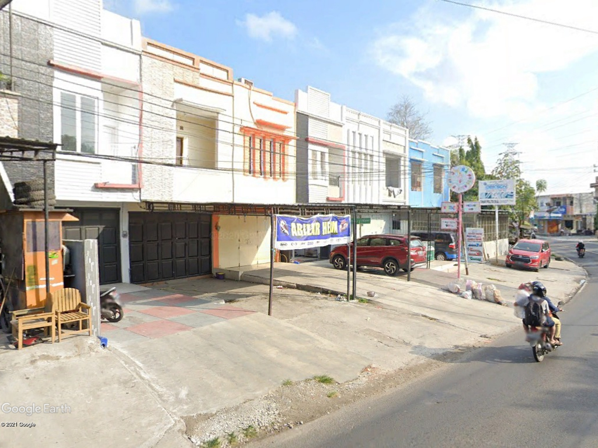
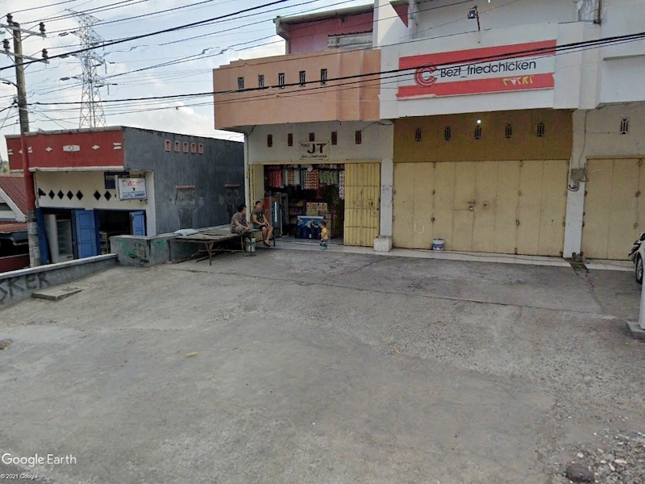
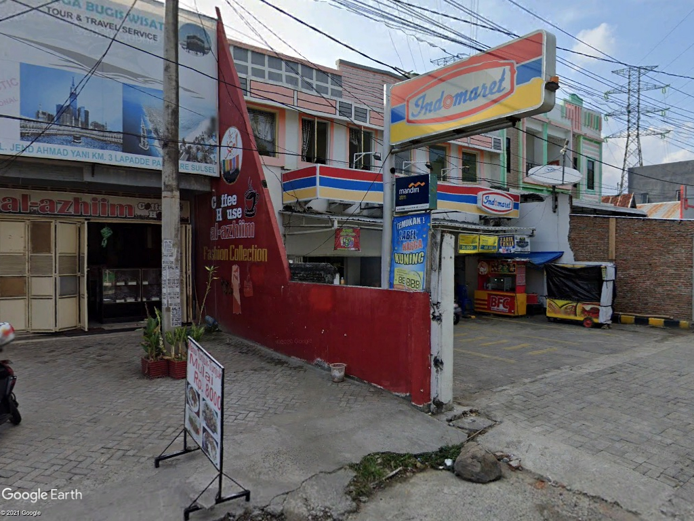
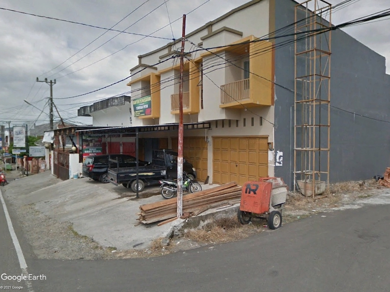
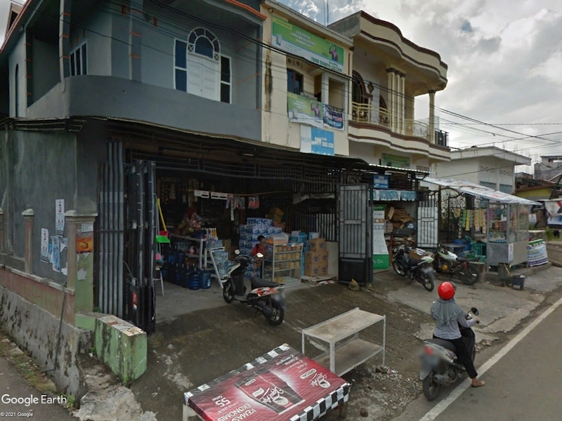

Sewa Ruko Parepare
Perkembangan perekonomian abad 2000 meningkat dengan signifikan dari abad 90an. Dengan tumbuhnya perekonomian di negeri ini membuat rumah toko menjadi hype dalam dunia properti. Rumah toko atau biasa disingkat dengan ruko adalah suatu jenis bangunan yang memiliki tujuan sebagai tempat usaha dan hunian. Pertumbuhan rumah toko bersaing ketat dengan rumah btn di kota Parepare, meskipun harga dari rumah toko relatif tinggi. Rumah toko memiliki banyak gaya serta harga yang cukup kompetitif dan beragam. Multi fungsi yang ditawarkan jenis bangunan ini membuat lokasi menjadi bagian terpenting dalam penyewaan atau pembelian satu unitnya. Selain itu, masih banyak informasi berkaitan landasan untuk memiliki rumah toko.
Rumah toko di Indonesia umumnya minimal berlantai dua. Lantai bawah digunakan sebagai tempat usaha sedangkan lantai atas digunakan sebagai tempat tinggal penghuninya. Mayoritas bangunan ruko didesain per blok dengan menampilkan fasad dan keseragaman sebagai nilai visual dan nilai jual. Sebagai tambahan, bangunan ini mengutamakan bentuk yang minimalis baik outdoor maupun indoor. Ruang-ruang indoor diharapkan memenuhi ekspektasi kebutuhan ruang secara garis besar sehingga fungsi bangunannya tercapai secara optimal untuk digunakan sebagai tempat istirahat maupun berbisnis. Saat ini, developer dan arsitek memiliki tidak sedikit desain yang dapat mengoptimalkan fungsi dan estetika dari sebuah rumah toko.
Rumah toko sebaiknya berada di kawasan pusat bisnis. Parepare sendiri mempunyai kawasan bisnis utama di sepanjang Jalan Bau Massepe dan sekitarnya, akan tetapi tempat ini telah cukup ramai dan ditempati oleh properti milik pribadi. Kawasan yang padat ini mendorong pengusaha properti untuk melebarkan kawasan bisnis untuk properti mereka. Penyebarannya tersebar di beberapa tempat di kota Parepare, misalnyanya pada Jalan Ahmad Yani Kilometer 2 hingga Kilometer 3, Kawasan Perumnas Wekke'e , dan juga di Jalan Poros Parepare-Pinrang. Kemunculan properti bisnis ini, meningkatkan aktivitas bisnis pada area tersebut, hal itu menarik pengembangan rumah toko semakin berkembang.
Lokasi yang paling menarik untuk jenis bangunan ini adalah Jalan Ahmad Yani. Jalan tersebut merupakan jalur padat kendaraan yang dilewati berbagai macam kendaraan, seperti penumpang antar kota, penduduk yang tinggal di bagian utara kota Parepare, dan pengemudi lainnya. Selain cocok untuk rumah toko, beberapa bangunan bisnis dan jasa telah merambah ke tempat ini seperti pusat perbelanjaan pecah belah, bahan bangunan dan pedagang kaki lima. Berikut penampakan sejumlah ruko yang berada di tempat ini bersumber dari google maps. Berikut beberapa rumah toko yang ada di daerah ini:
  Selain di Jalan Ahmad yani beberapa ruko juga tersebar di Jalan Poros Parepare-Pinrang. Lokasi ini lebih banyak diisi oleh gedung perkantoran dan pusat layanan daerah seperti PDAM, dan kost di Parepare. Tidak banyak toko kelontong pada daerah ini dan kebanyakan rumah toko bersifat gudang. Meskipun demikian, tempat ini memiliki potensi yang besar sebagai lokasi bisnis. Sama juga dengan lokasi yang berada di Permunas Wekke'e, perkembangan rumah toko di sini tentunya didasari oleh semaraknya perumahan mulai dari Perumnas Wekke'e hingga perumahan-perumahan lainnya yang disambungkan melalui Jalan Lingkar Lapadde. Kebanyakan yang berinvestasi ruko disini akan menargetkan konsumen dalam memenuhi kebutuhan rumah tangga, kesehatan, dan jasa. Berikut sejumlah rumah toko yang ada di daerah ini:
 